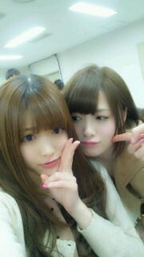
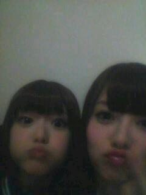

2013/0327Wedマイクが落ちてんっ(o・・o)
こんばんごっっ(o・・o)
さゆりんごっ(o・・o)
今日は
朝にＰＯＮ！の生放送
そして夕方には
春のＰＯＮ！祭りがありました♪
悪天候のなか
沢山の方にお集まりいただけて
すごく嬉しかったです(;_;)
メンバーみんな、雨やから
誰も来てくれやんよな〜(;_;)って
心配していたので
皆さんの姿を見たときは
めっちゃ嬉しかったです！！
そして
君の名は希望の全国握手会
個別握手会とありがとうございました♪
沢山の方とお話できて
嬉しかったです(;_;)
また沢山お話しましょう♪
次は３１日に東京ビッグサイトで
お待ちしてます♪

まいちゃんにみられて照れ照れ(>_<)
今日、シャキイズムをやったのですが
パートナーはマイオではなく
優太朗(優里)でした(*^^*)
優太朗はピョコピョコしたかわいい男の子でした(*^^*)☆
明日はＺＩＰ！春フェスにでます♪
楽しみー(*^^*)

まいちゃんと
タコのお口〜(・３・)ぷ〜
あと！
若様と宇宙飛行士の星出さんとの対談の
模様がＵＰされました！
ほんまにこれは嬉しかったです(;_;)
多分、もう一生できないんやろなってくらい
貴重な体験をしました(>_<)
星出さんのお話はすべてが
興味深くて聞きたいことが沢山あったのですが
時間が限られていたので
本当に惜しかったです(ノ_・,)
星出さんは本当に優しくて
ずっとニコニコとしてはりました(;_;)
素敵や!!!
皆さんの気になっていたことも
お聞き出来たんちゃうかと思います＼(^^)／
是非ご覧ください！
それでは、明日のＺＩＰ！春フェス
頑張ってきます(*^^*)
さゆりんごでしたっ(o・・o)
2013/03/27 23:00
コメント(594)
サユリ可愛いねー
応援しとるでー
応援しとるでー
こんばん歯( ´ ▽ ` )ﾉ
PONおつかれい！
PONおつかれい！
行きたいけど行けない(T∀T；)
さゆりんかわいい♪
さゆりんかわいい♪
31日握手会行くよー！
できたら公開収録も見届けるね！
できたら公開収録も見届けるね！
さゆりん！
バーン！
ねー
朝の生放送最前で見てて
ライブに消えたボーイです。笑
いや〜寒くて体辛くて
駐車場で寝てたらライブ終わってた( ´ ▽ ` )ﾉ
それな〜笑
バーン！
ねー
朝の生放送最前で見てて
ライブに消えたボーイです。笑
いや〜寒くて体辛くて
駐車場で寝てたらライブ終わってた( ´ ▽ ` )ﾉ
それな〜笑
明日も頑張ってー
応援してるでー!
応援してるでー!
お疲れ様でした( ´ ▽ ` )ﾉ
お疲れさまっちゅん(･ω･ゝ
全部読んだら
また来まぁしゅ(･ω･ゝ
全部読んだら
また来まぁしゅ(･ω･ゝ
お疲れさま！
今日はほんとに楽しかった！
通路歩いてたから、マイクのやつ すごく気になった笑
明日のフェスもがんばって☆
対談見なきゃ！
今日はほんとに楽しかった！
通路歩いてたから、マイクのやつ すごく気になった笑
明日のフェスもがんばって☆
対談見なきゃ！
松村さんお疲れ様！！
今回のPON祭り行けなかったけど楽しめましたか？？
めっちゃみたかった！！！
全国握手会ではありがとうございました！！
めっちゃ楽しかったよー(^o^)/
またコメントします( ^ ^ )/□
今回のPON祭り行けなかったけど楽しめましたか？？
めっちゃみたかった！！！
全国握手会ではありがとうございました！！
めっちゃ楽しかったよー(^o^)/
またコメントします( ^ ^ )/□
今日行きたかったな 実はねＰＯＮ！って札幌放送てないんだよみれなくてショックでした
実はねＰＯＮ！って札幌放送てないんだよみれなくてショックでした 明日もがんばってね
明日もがんばってね
トミーです。
ライブお疲れ様!
あしたから合宿だから体調考えてポン祭りいかなかったわ…
知り合いからさゆりんライブ中にちょくちょく舞台袖にはけてたって聞いて心配だったけど元気そうで安心したわ(>_<)
さゆりんも体大事にね!
31日の個別楽しみにしてますヽ(゜▽、゜)ノ
ライブお疲れ様!
あしたから合宿だから体調考えてポン祭りいかなかったわ…
知り合いからさゆりんライブ中にちょくちょく舞台袖にはけてたって聞いて心配だったけど元気そうで安心したわ(>_<)
さゆりんも体大事にね!
31日の個別楽しみにしてますヽ(゜▽、゜)ノ
こんりんご(o・・o)/~
今日のpouのライブにはいけんかった(;_;)
さゆりんにあいたかったよー( ´△｀)
明日のZeppもいけないけど家の中で応援してるね！
ファイトだーさゆりん！(￣^￣)
んじゃおやすみ～^^
今日のpouのライブにはいけんかった(;_;)
さゆりんにあいたかったよー( ´△｀)
明日のZeppもいけないけど家の中で応援してるね！
ファイトだーさゆりん！(￣^￣)
んじゃおやすみ～^^
ZIP！行けないけどがんばれっしゅん!!＼(^^)／
PON祭りお疲れ様でした！
さゆりんめっちゃ可愛かったです(^-^)/
なまでハウスを聞けたので良かったです！
ZIP春フェスはいけないんですけど
応援してますね(((o(*ﾟ▽ﾟ*)o)))
ではお休みなさーい☆
こんばんわ♪(´ε｀ )
今日のPONのライブ楽しかったよ(*^o^*)
やっぱマイク落ちたんやね(ｰ ｰ;)
何回も直してたでさすがに
かわいそうに思えたわ(>_<)
んでも直しながら歌ってる姿見て
感動したで(*^_^*)
ビックサイトも行くから
楽しみにしてんで*\(^o^)/*
んならまたね～( ´ ▽ ` )ﾉ
今日のPONのライブ楽しかったよ(*^o^*)
やっぱマイク落ちたんやね(ｰ ｰ;)
何回も直してたでさすがに
かわいそうに思えたわ(>_<)
んでも直しながら歌ってる姿見て
感動したで(*^_^*)
ビックサイトも行くから
楽しみにしてんで*\(^o^)/*
んならまたね～( ´ ▽ ` )ﾉ
今日PONみようと思ったけど実家でみれなかった（笑）
あと握手会どっちも行きましたー(^-^)/
凄く楽しかったです！！
でもチャリティーライブには行けませんでした。
でも募金はしました！
これからも微力ですがお互いに出来ることやっていきましょー！！
また今月末の握手会行くので楽しみー！
あと握手会どっちも行きましたー(^-^)/
凄く楽しかったです！！
でもチャリティーライブには行けませんでした。
でも募金はしました！
これからも微力ですがお互いに出来ることやっていきましょー！！
また今月末の握手会行くので楽しみー！
さゆりんこんばんごー(^O^)／
東京ビックサイト行くよー(((o(*ﾟ▽ﾟ*)o))
握手だー＼(^o^)／
久しぶりだー！
覚えてないやろなー(ｰｰ;)
でもそんなん関係ないわ(^ ^)
しかも公開収録まであって最高\(//∇//)\
楽しみ♬
それじゃあまたねー！
大分のあっきーより
マイク落ちちゃってたんだw
何回か出たり入ったりして最後にさゆりんごだけみんなより後ろで踊ってたの可愛かったww
はけるときもすごく笑顔で好きです。
明日もファイトです！応援してます！！
何回か出たり入ったりして最後にさゆりんごだけみんなより後ろで踊ってたの可愛かったww
はけるときもすごく笑顔で好きです。
明日もファイトです！応援してます！！
さゆりんお疲れ様 ((o(´∀｀)o))
まいやんとのカップルほんと似合うわ笑
楽しそう！笑
春フェス頑張ってね^o^
楽しそう！笑
春フェス頑張ってね^o^
こんばんは♪
昨日、春のPON!祭り行ったよ。さゆりん度々いなくなるから、またプリンシパルのときみたいなことしちゃったのかなと思ってしまった。反省してます（笑）
全握、girls award、PON、zipと乃木坂のライブ見る機会がたくさんあってすごく幸せです。忙しいと思うけど頑張ってね！
昨日、春のPON!祭り行ったよ。さゆりん度々いなくなるから、またプリンシパルのときみたいなことしちゃったのかなと思ってしまった。反省してます（笑）
全握、girls award、PON、zipと乃木坂のライブ見る機会がたくさんあってすごく幸せです。忙しいと思うけど頑張ってね！
こんばんは(o^^o)
PONお疲れ様でした♪( ´θ｀)ノ
私は行けなかったのですが…
全国握手会さゆりんごパーンチくらいました(^_^)笑
また行きたいですヾ(＠⌒ー⌒＠)ノ
明日のZIPも頑張って下さい(^ ^)
さゆりん大好きなんよ(o^^o)
タイトルは今日のPONライブの出来事ですか？
かなり遠くから見てたから何が起こったのかわからなかったけど、もしそうならば体調悪くなったんじゃなくて良かったです！
かなり遠くから見てたから何が起こったのかわからなかったけど、もしそうならば体調悪くなったんじゃなくて良かったです！
さゆりんのブログにはまいやん出るわ、
まいやんのブログにはさゆりん出るわ、
どんだけ仲いいんだよ（笑）
ゆったんは優太朗なんだね(ﾟｍﾟ*)ﾌﾟｯ
まいやんのブログにはさゆりん出るわ、
どんだけ仲いいんだよ（笑）
ゆったんは優太朗なんだね(ﾟｍﾟ*)ﾌﾟｯ
昨日、今日と行けませんが、応援してます(^-^)
ガンバガンバ(=^ェ^=)ノ
ガンバガンバ(=^ェ^=)ノ
りんご姫こんばんは(*^o^*)
今日もお仕事お疲れ様!!
明日のＺＩＰ！春フェス行かれへんけど、応援してるから頑張ってなっ!!
星出さんとの対談見てから寝るわっ(≧∇≦)
でわでわ あでゅー
今日もお仕事お疲れ様!!
明日のＺＩＰ！春フェス行かれへんけど、応援してるから頑張ってなっ!!
星出さんとの対談見てから寝るわっ(≧∇≦)
でわでわ あでゅー
りんごさん、ライブおつかれー、雨だったのにえらいわー
俺は明日久しぶりに野球やります。
東京ビッグサイトの握手会いきます、浪人生なので、これで最後にしようとおもいます。後継者とかなのっといてすいません、次で二回目なんですけど、すいません、りんごさんは、俺のこと覚えてるかわからないけど、握手のときは、よろしく( v^-゜)♪
俺は明日久しぶりに野球やります。
東京ビッグサイトの握手会いきます、浪人生なので、これで最後にしようとおもいます。後継者とかなのっといてすいません、次で二回目なんですけど、すいません、りんごさんは、俺のこと覚えてるかわからないけど、握手のときは、よろしく( v^-゜)♪
こんばんはっ！
ライヴや握手会、お疲れ様でした！
関西でもいっぱいイベントをしてほしいなぁと思いますっ！
お願いしますっ＼(^o^)／
そして、私的にまいやんとさゆりんちゃんの2ショットは神です(〃ω〃)
また楽しみにしてます！
おやすみなさい( ´_ゝ`)☆*
さゆりんちゃん大好きーーーーー！
ともきだよー！
ごめん！コメント遅くなった(T_T)
PON!祭りお疲れ！
明日のzip!春フェスも行けないけど、31日の個別は絶対行くから！待っててよ(・ω・)ノ
話したいことたくさんあるから^ - ^
沙友理のパートナーがいつか俺になればいいのに…。
あと、質問ね！
俺、20日の全握行ったんだけど、覚えてる？
個別のときも聞くからー！♪( ´▽｀)
まぁ覚えてたらすごいんだけどね…。(T_T)
最後に、
沙友理大好きー！
またね(o・・o)
ごめん！コメント遅くなった(T_T)
PON!祭りお疲れ！
明日のzip!春フェスも行けないけど、31日の個別は絶対行くから！待っててよ(・ω・)ノ
話したいことたくさんあるから^ - ^
沙友理のパートナーがいつか俺になればいいのに…。
あと、質問ね！
俺、20日の全握行ったんだけど、覚えてる？
個別のときも聞くからー！♪( ´▽｀)
まぁ覚えてたらすごいんだけどね…。(T_T)
最後に、
沙友理大好きー！
またね(o・・o)
明日もがんばってね～
さゆりん可愛いー！
まいまいとのツーショット最高ですね！(*≧艸≦)
出来ればまたテレビでさゆりんごパンチお願いしますm(_ _)m
お仕事頑張ってください！
まいまいとのツーショット最高ですね！(*≧艸≦)
出来ればまたテレビでさゆりんごパンチお願いしますm(_ _)m
お仕事頑張ってください！
さゆりん、こんばんご〜￣O￣)ﾉｵﾊｰ
今日はPON祭りお疲れ様！！
う〜 ...俺は行けなかったんよ(｡-_-｡)
しかも、Zip春フェスも行けないし、31日の個別も行けないんよ ...
ポジティブ ...になれないー
でも、さゆりんのことずっと応援してる〜ヾ(≧∇≦*)/
明日のZip春フェス楽しんできてね！！(o・・o)/~
タコのお口かわいすぎるぜ〜(*￣∀￣)ゞｴﾍﾍ
今日はPON祭りお疲れ様！！
う〜 ...俺は行けなかったんよ(｡-_-｡)
しかも、Zip春フェスも行けないし、31日の個別も行けないんよ ...
ポジティブ ...になれないー
でも、さゆりんのことずっと応援してる〜ヾ(≧∇≦*)/
明日のZip春フェス楽しんできてね！！(o・・o)/~
タコのお口かわいすぎるぜ〜(*￣∀￣)ゞｴﾍﾍ
全部読んだから
また来たよ(･ω･ゝ
PON！祭り出来たんだね(ﾟ∀ﾟ*)
良かったねヾ(≧∇≦)
生出演の模様は録画してあるやつを
泊まり明けの29日夜に観る(･∀･)
まっちゅんの活躍やいかに(*^▽^*)
前にもコメントしたけど、31日は
外れちゃったので券がないんです
(´；ω；`)ぅぅぅ
慰めてー(≧ω≦)
でも、公開収録を楽しみにしてます！
まっちゅんの活躍やいかに(*^▽^*)
それではおやすみなさゆりん！←
また来まぁしゅ(･ω･ゝ
また来たよ(･ω･ゝ
PON！祭り出来たんだね(ﾟ∀ﾟ*)
良かったねヾ(≧∇≦)
生出演の模様は録画してあるやつを
泊まり明けの29日夜に観る(･∀･)
まっちゅんの活躍やいかに(*^▽^*)
前にもコメントしたけど、31日は
外れちゃったので券がないんです
(´；ω；`)ぅぅぅ
慰めてー(≧ω≦)
でも、公開収録を楽しみにしてます！
まっちゅんの活躍やいかに(*^▽^*)
それではおやすみなさゆりん！←
また来まぁしゅ(･ω･ゝ
さゆりんご氏、うっす。
連日ライブお疲れさん。
連日ライブお疲れさん。
ともきだよー！
沙友理ごめん！コメント二回目w
言い忘れたわ！
沙友理、明日のZIP!春フェスがんばってね(*^^*)
行けないけど応援してる！
またね。
(o・・o)
沙友理ごめん！コメント二回目w
言い忘れたわ！
沙友理、明日のZIP!春フェスがんばってね(*^^*)
行けないけど応援してる！
またね。
(o・・o)
天候悪い中お疲れ様！
体調大丈夫？
今日特に寒かったで体調崩さんよぉにね！
俺は今日バイトやって、さーちゃん見れんかったけど、ビックサイト行くでよろしくね＼(^^)／
服とか決めた？
あと、そのあとの公開収録も楽しみにしとるからね！！！
あっ、明日から岐阜帰る！！！
で、31の朝には東京戻って
さーちゃんに会いに行くかんね！
あー、俺も服決めなあかんわ！
あー、なんかうまいこと書けんな。
なんか、まとまりのない変な文でごめんね。
さーちゃんに体調崩しちゃあかん！とか言いながら俺が体調崩しとる！ってゆーね！笑
じゃー、なんか
どんどん変になってくで、この辺で！
さーちゃん大好きやでね♪
じゃあ、また握手会で！！！！
体調大丈夫？
今日特に寒かったで体調崩さんよぉにね！
俺は今日バイトやって、さーちゃん見れんかったけど、ビックサイト行くでよろしくね＼(^^)／
服とか決めた？
あと、そのあとの公開収録も楽しみにしとるからね！！！
あっ、明日から岐阜帰る！！！
で、31の朝には東京戻って
さーちゃんに会いに行くかんね！
あー、俺も服決めなあかんわ！
あー、なんかうまいこと書けんな。
なんか、まとまりのない変な文でごめんね。
さーちゃんに体調崩しちゃあかん！とか言いながら俺が体調崩しとる！ってゆーね！笑
じゃー、なんか
どんどん変になってくで、この辺で！
さーちゃん大好きやでね♪
じゃあ、また握手会で！！！！
こんばんは！
全握盛りだくさんな内容だったけど全部めっちゃ楽しかったです！
なにより初めてさゆりんと握手できたことに感動(T-T)
めっちゃ好きですしか言えなかった(´Д｀)
可愛すぎて言葉が上手く出てこなかったよー(笑)(*^^*)
最高の時間をありがとう(^^)
今日も行きたかったー
明日も頑張ってください！(^O^)
いつでも応援してます！
全握盛りだくさんな内容だったけど全部めっちゃ楽しかったです！
なにより初めてさゆりんと握手できたことに感動(T-T)
めっちゃ好きですしか言えなかった(´Д｀)
可愛すぎて言葉が上手く出てこなかったよー(笑)(*^^*)
最高の時間をありがとう(^^)
今日も行きたかったー
明日も頑張ってください！(^O^)
いつでも応援してます！
今日、PON祭り見に行きました！！
さゆりん、顔ちっちゃくて髪さらさらで可愛かったです(>_<)
もっとｽｷになりました！！大好きです！！
さゆりん、顔ちっちゃくて髪さらさらで可愛かったです(>_<)
もっとｽｷになりました！！大好きです！！
お疲れ様です(・o・)
ゆったんに浮気したらまいやんに怒られますよ-w
ブログ更新待ってました！
今後、一生出来ないかも！って体験は本当に貴重ですよね！
僕も昨日まで、2週間かけて、車で九州一周したことと、去年のロンドンオリンピックを見に行けたことは凄く貴重で大学生の今しか出来ないことだなぁと思いました。
ただ、そういったことを今後二度と出来ないと思ってしまうと、思い出に浸るだけになってしまうけど、生きている限りは実行に移せば何度でもできると思います！
さゆりんごは芸能界とゆう普通では味わえない世界にいるから、これからもたくさんの経験をできる分羨ましいです(^○^)
今後、一生出来ないかも！って体験は本当に貴重ですよね！
僕も昨日まで、2週間かけて、車で九州一周したことと、去年のロンドンオリンピックを見に行けたことは凄く貴重で大学生の今しか出来ないことだなぁと思いました。
ただ、そういったことを今後二度と出来ないと思ってしまうと、思い出に浸るだけになってしまうけど、生きている限りは実行に移せば何度でもできると思います！
さゆりんごは芸能界とゆう普通では味わえない世界にいるから、これからもたくさんの経験をできる分羨ましいです(^○^)
こんばんは♪
今日は行けなくて残念です(T-T)
明日も頑張ってください(^-^)/
では、お休みなさい(-.-)Zzz・・・・
めっちゃ可愛いです！！
4月7日の名古屋の握手会行くよ！！
楽しみだな☆
さゆりんと握手したーい★
まっちゅんの事、いつも忘れられません☆
本当に大好きだよ！！
4月7日の名古屋の握手会行くよ！！
楽しみだな☆
さゆりんと握手したーい★
まっちゅんの事、いつも忘れられません☆
本当に大好きだよ！！
さゆりん、どうもです！！
たっちゃんだよー！！
今日、春のPON！祭りだったね～
僕は、友達と一緒に行きましたよ♪
いやー、今日もめちゃめちゃ楽しかったですよ♪(^з^)-☆
ありがとうございました♪
周りには、多くの乃木坂ファンがいましたが、
僕は負けじと大声でさゆりんの事叫びました！！
声、聞こえたかなぁ？
意外に自分の声が響いていました
まぁ、とにかく今日１日、とても楽しかったです！！
昨日の夜に、手紙書いたんですが、渡す事が出来なかったので、郵便で送るので、楽しみにしててください♪
明日は、ZIP！春のフェスだね
僕は行けませんが、頑張って下さい！
４月から高校生になって、野球をするから握手会、ライブには、参加する回数が大幅に減るけど、毎日ブログにコメント書くから♪
最後にこんな思い出が出来て、最高です！！
本当にありがとうございました♪(^з^)
やっぱり、乃木坂46は宇宙一最強で、最高です！！
そして、大好きです♪(^з^)-☆
これからも、乃木坂活動や色々頑張って下さい♪(^з^)-☆
それしても、さゆりんはまいやんとめちゃめちゃ仲が良いですなぁ～
羨ましいですわぁ～(*^^*)
じゃあ、さゆりんに質問します♪(^з^)
さゆりんは、まいやんの事を彼氏だと思ってる？
それとも彼女？
海老の尻尾は、最後まで食べますか？
それとも残しますか？
僕は、みなみやれなりんと同じ千葉県出身です！！
なので、千葉県の良いところを言ってください！！
友達から呼ばれてたあだ名は？
なんで、看護師を目指そうと思ったんですか？
野球をめちゃめちゃ頑張って、甲子園出るので、さゆりんの力を貸して下さい！
いつから、マヨネーズが恋しくなったんですか？
さゆりんが乃木坂の曲の中で一番好きなのは？
今でも、正座で寝てるんですか？
地元に帰る時に必ず寄るお店は？
はいッ！！
以上です！！！
質問に答えてくださいね♪(^з^)-☆
お返事、待ってます♪(^з^)-☆
さゆりんは、いつもめちゃめちゃ可愛いよ♪
じゃあ、またコメント書きます♪
バイバイ(*≧∀≦*)♪
お疲れりんごさゆりんご (o・・o)/
えーPONの生放送は爆睡して見れませんでした（号泣）
しかもPON祭りも用事で行けなかったしorz
個別と全国は楽しかったよ\(//∇//)\
でも最近枚数少なくてゴメンね(T_T)
31日のBS楽しみにしてるよ！
明日のZIP！春フェス頑張ってね( ´ ▽ ` )ﾉ
えーPONの生放送は爆睡して見れませんでした（号泣）
しかもPON祭りも用事で行けなかったしorz
個別と全国は楽しかったよ\(//∇//)\
でも最近枚数少なくてゴメンね(T_T)
31日のBS楽しみにしてるよ！
明日のZIP！春フェス頑張ってね( ´ ▽ ` )ﾉ
りんごこんばんごっ(o^^o)
けっこう前のことになっちゃったけど全握もチャリティーライブもガールズアワードもお疲れさま♪
これらは行けなくてごめんよー(/ _ ; )あっでも、うまズキッとか音楽番組とか乃木坂、もといりんごが出たテレビは全部チェックしたよ！笑
PON祭りでは新たな特技披露してたねー(笑)
てっきりさゆりんごぱんちかと思ってたよ(^.^)
いやいや。そんなことではなくてね。おれが書きたいのは個握よ個握！
うん。まぁたぶんりんご覚えてないだろうけどね。1部と2部に一回ずつ言った髪型アシメの高校生よ。いや別に認知はええんだけどね。
感想書いたるよ。えーっとね。失敗したぁ……(/ _ ; )
あっりんごんとこに行ったのが失敗じゃないかんね。
なんかあんま思ったこと言えなかったなぁってこと。初めてきたよーってことも一周年ライブが最高の誕生日になったよーってことも思ったように言えなかった(/ _ ; )
かろうじて最後にさゆりんごぱんちもらえて良かったわ(>_<)
うん。もっかい行く！リベンジだ！！絶対次はスッキリして帰る！！(*^^*)
もうプリンシパルも行く！受験は〜…うん。ま、一日ぐらいだいじょぶだろ！笑
握手ミスっちゃったけどりんごが大好きだよ！おれよりりんご愛してるやつなんていないって胸張って言ってやる！
ばいっ(#^.^#)
初コメでっす♪
次の握手会でさゆりんとこ行くよー
俺まいやん推しだけどさゆりんもめっちゃ好きw
でわ、握手会で会おう！
次の握手会でさゆりんとこ行くよー
俺まいやん推しだけどさゆりんもめっちゃ好きw
でわ、握手会で会おう！
今日PONのステージ見に行きました！！とりあえず雨が止んでてよかったですね！でもちょっと遠くからで見えづらかった(>_<)でもさゆりんがなんかおかしいのきづいたよ！マイクだったんですね！貴重なもの見れた！
お疲れ様でした
お疲れ様でした
生放送、ライブおつかれさまでしたー(^o^)


うらやま